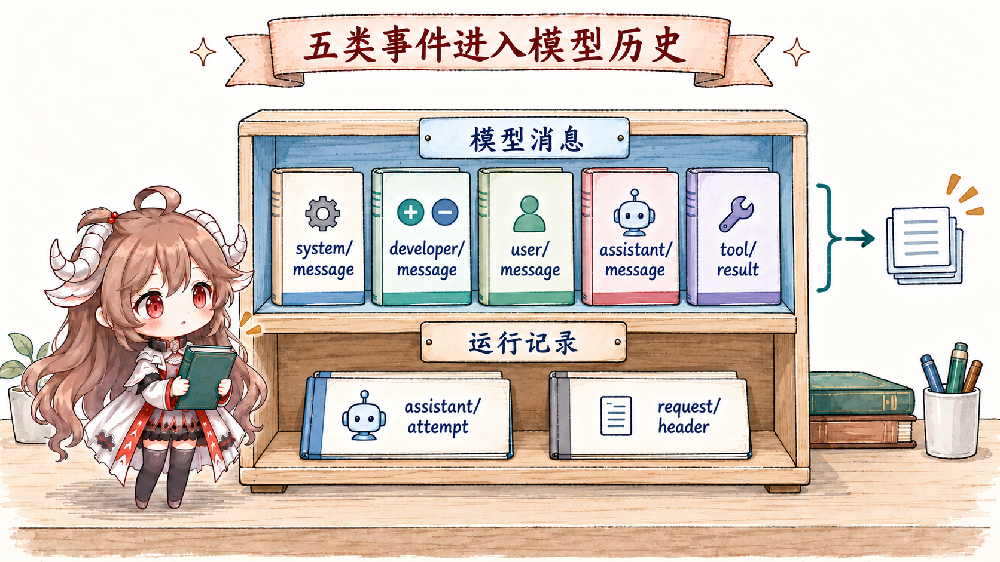
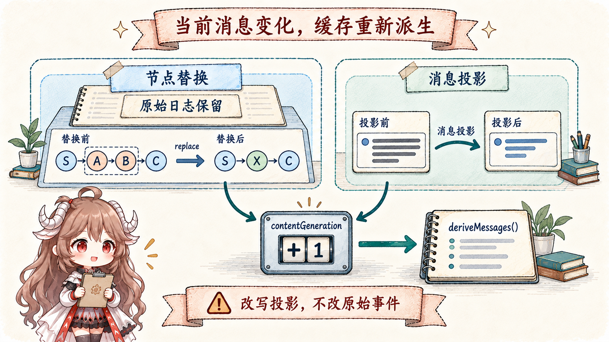
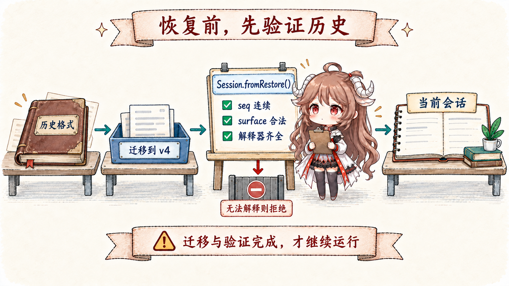

很多 Agent 系统一开始只有 messages.push()。工具状态、token、approval、重试和 UI 进度随后被塞进旁边的 Map；需要恢复时，再猜哪些 Map 能从 messages 重建。DSH 反过来：先把运行事实写入追加日志，模型消息只是其中一个投影。
一次 turn 同时服务三类消费者：模型需要 system、developer、user、assistant、tool 消息；人类时间线需要原始对话和工具过程；恢复路径需要 turn/step 边界、request header、错误与继承关系。追加日志保留这些事实，各消费者再按用途投影。
阅读契约。读完以后，你应该能说明：append() 提交前后分别保证什么；为什么五种消息事件需要声明 surfaceOp；replace 为什么遮蔽模型表面却不删除原始日志；人类 transcript 为什么不能直接读取 current surface；以及未知事件、sourceEventSeqs 和 session/end-seed 如何让恢复失败得更安全。
源码快照。本文依据提交 687f282。当前逻辑格式为 v4；Session 负责追加、surface 验证和 seed 接纳，格式目录负责历史迁移与持久化数据的读取校验。
一、Session 怎样追加并保护运行事实
1.1 append 先快照，再验证，最后一次提交
Session.append() 不把调用方传入的对象引用直接塞进 log。它先把 data、surface metadata 和 sourceEventSeqs 做 lossless JSON 快照，给候选事件分配连续的 seq 与时间戳并冻结，再验证 marker、引用和 replacement coverage。SurfaceManager 先验证并规划 transition；检查通过后事件才进入私有 log，surface 随后按已接纳的日志增量折叠。验证失败不能留下半条事件或半次替换。
通过 append() 接纳的事件与嵌套 message 会被深冻结。修改模型输入应追加 replacement，或追加由已注册解释器处理的消息投影事件。snapshotEvents() 返回稳定快照，已标记 deprecated；新生产逻辑应使用查询或投影接口，减少重复扫描整份日志。
下面展示调用形状：message、summary 是已构造的消息，端点是当前节点的 SessionSeq，shadowedSeqs 覆盖全部被替换节点。
session.append('user/message', message, {
surfaceOp: 'append',
})
session.append('user/message', summary, {
surfaceOp: { op: 'replace', startSeq, endSeq },
sourceEventSeqs: shadowedSeqs,
})1.2 通知发生在 commit 之后，观察者失败彼此隔离
Attached Session 提交完成后才发出 session/event。每个 listener 独立 containment：一个遥测或 UI listener 抛错，不会让已提交事件从 log 中消失，也不会阻止其他 listener 观察。Reentrant append 则被拒绝，避免 observer 在同一次通知栈里递归改写事件顺序。
持久化 listener 可以做 write-behind，但真正需要耐久语义的生产者还必须显式等待 ctx.sessions.flush(session)。下一篇会讨论这个 observation barrier；在 Session 本身看来，append 负责原子内存事实，flush 才负责等待外部镜像。
二、事件词汇把内容、执行与诊断分开
2.1 五种消息事件进入 surface，流帧单独结算

SurfaceEventType 包含 system/message、developer/message、user/message、assistant/message、tool/result，五者都必须声明 surfaceOp。Loop 在首条用户消息前写入第一个 system 节点；request/header 保存调用配置、工具 schema 与适配器默认值，拒绝旧的 header.system 字段。V4 的工具结果使用独立的 role: 'tool' 消息，toolCallId 和 isError 位于 message 上，content 直接保存结果块。
一次回答正在流式输出时，界面消费的是 agent/assistant-stream 实时帧，日志不再为每个 chunk 追加独立事件。一次尝试结束后，成功输出结算为 assistant/message，失败或准备重试且没有提交消息的尝试结算为 assistant/attempt；两者都内嵌保留时序和 delta 边界的 stream。取消时若已有文本或 reasoning 前缀，则可提交带 interrupted: true 的部分消息，尚未派发的工具调用不进入它。
实时帧先供界面显示，尝试结算事件随后进入 Session，持久化由 flush 等待。assistant/attempt、turn/step 边界、tool/call 与请求记录用于恢复和诊断。tool/call 记录调度器接纳调用的入口，外部执行状态由后续结果以及恢复时的检查共同确定。
把一次“先失败、再成功”的请求重试压成记录形状，三条通道的区别会更清楚：
实时显示：attempt 1 的帧 → attempt 2 的帧
Session：assistant/attempt { stream: … }
assistant/message { message: …, stream: … }
模型历史：只接纳已提交的 assistant/message
持久化：由 flush 等待上述 Session 记录写入2.2 工具增减用 developer/message 绑定历史定义
继续“修测试”的例子：第一步只有 read，第二步挂载了 search。Loop 先写入包含 read/search 完整定义的新 request/header，再追加 developer/message，用 tool-addition 声明 search，并用 headerSeq 指回那条 header。以后 search 的 schema 改变，重放仍能找到最初的定义。请求构建代码按名称比较增减；同名 schema 更新由工具历史判断是否需要重开声明系列。
下面省略消息 id、时间与完整 schema，只保留可复现该变化的字段：
seq 20 request/header
header.tools = [read, search_v1]
seq 21 developer/message surfaceOp: append
headerSeq: 20
message.role: developer
message.content: [{ type: tool-addition, toolName: search }]
seq 30 developer/message surfaceOp: append
message.content: [{ type: tool-removal, toolName: search }]新增工具时必须提供更早的 headerSeq，每个名字必须在该 header 中对应唯一、完整的 schema；只移除工具时禁止携带该引用。Session 校验在 append、restore 与完整日志折叠时执行同一规则。测试覆盖后续 header、replacement、restore 和 fork，确认旧引用仍绑定旧定义。
2.3 sourceEventSeqs 把产物连回来源
system/message、developer/message、user/message 与 tool/result 可以通过 sourceEventSeqs 引用来源。Compaction replacement 必须引用所有被遮蔽 surface nodes，tool result rewrite 也要引用原结果。引用必须非空、唯一且只指向更早 seq；replacement 不得漏掉覆盖范围里的节点。assistant/message 则内嵌自己的原始 stream，明确禁止顶层 sourceEventSeqs，不再用 chunk 事件编号拼接来源。
sourceEventSeqs 描述消息或 summary 从哪些事件产生；headerSeq 选择新增工具的 schema。前者还必须覆盖 replacement 遮蔽的全部节点，后者必须指向 request/header，两种引用各自接受校验。
三、Surface 是当前模型历史的有序投影
3.1 append 扩展尾部，replace 遮蔽连续区间

SurfaceOp 只有两种形状：'append'，或 { op: 'replace', startSeq, endSeq }。Replace 的 startSeq/endSeq 必须都是当前 surface node，并构成顺序正确的闭区间；新事件进入该位置，被覆盖的 seq 只从 surface nodes 中移除，仍留在 SessionEvent[]。
每次 replacement 同时增加 replaceGeneration 与 contentGeneration；插件只改变消息内容、不改变节点集合时，只增加后者。普通 append 仍走增量尾部路径，deriveMessages() 则以 contentGeneration 为重建依据。否则节点位置虽然没动，模型却可能继续读到旧内容。
系统提示词还有一条位置约束：当 surface 的第 0 个节点是 system/message，覆盖它的 replacement 也必须是 system 事件，且只能覆盖该节点。后续追加的 system 节点没有这项保护。是否在历史尾部追加非空的新提示词，由当前已绑定模型路由的 systemPromptUpdate: 'in-history' 能力和请求系列决定；不支持时需要归并到首个 system 节点，清空提示词则要把所有仍生效的 system 节点逐个替换为空。SystemPromptProjection 负责这些实际写入，而不是由 UI 原地改文本。
3.2 人类 transcript 与模型 surface 故意不同
假设一段十轮历史被 summary replacement 遮蔽。模型下一步应该只看到 summary 与较新消息；人类已经看过的十轮对话却不应该从 UI 时间线消失。Session 因而提供 isAppendSurfaceEvent()：人类 transcript 从 append-origin events 构建，replacement copies 只改变 model-facing surface。
原始日志持续保留十轮对话，surface 只留下 summary 与较新消息。人类时间线从原始 append 事件读取已发生的对话，模型请求从当前 surface 读取本轮有效内容。
四、deriveMessages 是一条受约束的增量缓存
4.1 每个新 surface node 只投影一次
deriveMessages() 记住已处理 nodes 数量和 contentGeneration。该 generation 未变时，只遍历新尾部；返回的新数组共享深冻结 Message 对象。后续 append 不会让调用者先前保存的数组偷偷增长。未改变的消息可以复用原数据；插件产生的投影内容则是不可变派生副本，保留原消息身份。
空 content 的 assistant/message 可以承载 max-token usage；空 system/message 记录该位置已无系统指令；空 developer/message 也可保留 surface 位置。这三类空消息都投影为 null。Direct prompt、synthetic injection 与 goal round 使用 user/message，typed source 记录各自来源，生产者将必要的说明写入 content。
4.2 插件改变消息内容，也必须留下可重放决定
例如工具结果仍占据同一个 seq，但裁剪插件希望模型只读其中一部分。插件不能直接改写原结果，而要声明消息投影事件，并用 registerMessageProjection() 注册纯解释器。Session 在接纳决定前调用它验证来源与输出，再缓存保持身份的消息副本。
这条路径保持 surface.nodes 不变，同时使内容缓存失效。缺少解释器时，append 和 restore 都拒绝该事件；卸载已被使用的解释器后，缓存读取同样被阻止。恢复运行必须重新装入能解释这些投影决定的插件。
4.3 “Model-visible means logged” 也有反向约束
请求重建依赖三组已记录数据：
- 模型 history 从已提交的 surface event 派生。
- 已写入日志的内容不一定进入模型；只有 current surface 上的五类 message event 才提供消息，并叠加已记录的消息投影。
- system 和 developer 消息来自 surface；当前 tools、provider/model 配置与 adapter defaults 来自
request/header。request/context记录路由能力，不参与 header 相等性或请求重建，也不能代替当前 prepared call 的能力判断。
工具声明还有独立的 toolHistory() 缓存：它按事件顺序读取 header 与 developer 消息，每次只消费新增事件，依据历史 headerSeq 解出 additions。显式新系列或保留名称的 schema 改变会重建声明基线；移除后恢复同名同定义工具则保留系列。旧日志只有 header、缺少对应更新记录时，回退为完整的当前工具声明。Loop 与 compaction 都使用该状态，适配器再按当前路由能力决定怎样发送增量声明。
实验性插件可以用 appendPluginRecord() 保存 plugin:<owner>/<record> 记录。这些记录标记 ignorable: true，保留在日志并随 resume/fork 复制，读取方负责校验 payload，格式迁移尽力保留。它们承载允许丢失的实验状态，始终不进入模型 surface。
五、先校验持久历史，再构造恢复会话
5.1 Seed 必须是可验证的当前格式前缀

Session.fromRestore() 接纳持久化层交付的、独立拥有或已深冻结的 seed，验证运行必需字段、事件封装、连续 seq、surface 转移和 header。它不再对全部事件重复复制和冻结，内嵌 assistant stream 也留给流消费者或存储校验器检查。相比之下，普通 Session.create() 的 seed 仍走完整快照路径。调用者必须满足传入数据的所有权约定，不能把可变共享对象伪装成已准备好的恢复数据。
一个事件若类型未知且没有 ignorable: true，恢复必须拒绝；需要消息投影却没有对应解释器时也一样。可忽略未知事件仍留在日志中，只是不改变 surface，不能把“可跳过解释”理解为删掉原记录。
SESSION_FORMAT_VERSION 当前为 4。内置格式目录提供 v0→v1→v2→v3→v4 相邻迁移，存储层保留原 generation 并发布当前格式的后继。V3→V4 把嵌套工具结果提升为 tool 角色消息，转换消息 source，重映射事件引用并验证转换结果。未来版本、缺失迁移路线或不支持的历史结构会拒绝读取；同为 v4 的日志直接接受当前读取校验。
V4 格式层执行强制的 跨事件关系校验：turn/step 开闭、工具请求与结果配对、重试坐标等在暴露有效日志前接受检查。JSONL scanner 会先验证记录，再处理可恢复尾部。Session 构造继续负责事件封装、seq、surface 与解释器；旧的可选 invariant companion 已由这些读取路径上的检查取代。
5.2 精确 fork 前缀怎样形成可继续的子会话
buildForkSeed() 复制到指定 seq 的闭区间，即使该位置仍处于 turn 中，也可构造子会话。它先在精确切点追加 session/end-seed { inherited: true }，再为开放 step 补齐缺失工具结果，最后追加需要的 step/end 与 turn/end { reason: { kind: 'forked' } }。已关闭的 step/turn 保持原样，inheritedEventCount 只计复制来的前缀。
父会话前缀：turn/start → step/start → assistant/message → tool/call
子会话新增：session/end-seed { inherited: true }
tool/result { TOOL_OUTCOME_UNKNOWN }
step/end → turn/end { reason: forked }这里的结果说明切点处继承了哪些记录。父会话可能在切点之后执行或完成工具，因此 fork 的 TOOL_NOT_STARTED 和 TOOL_OUTCOME_UNKNOWN 都要求重试前检查只读性、幂等性或外部状态。两种切点测试分别覆盖“未继承 tool/call”和“已继承 call、尚无 result”。当前 subagent_fork 的 本地实现仍选取最后一个完整 turn 前缀；上面的精确切点能力属于 Session fork API。
继承 marker 与子会话补齐记录都由子会话拥有。firstLifecycleSeq 从这些子会话记录开始，firstLiveSeq 则是传入 constructor 的整个 seed 长度；新 fork 的两个位置可能不同。恢复已有会话时保留继承切点，并在需要时追加普通生命周期 marker。Compaction 等独立 bracket 读取 marker，判断未闭合 start 是否来自较早生命周期。
六、这套状态模型带来的工程判断
- 从 Session 重建历史。UI 可以消费更多事件，但恢复与模型 history 必须回到 Session。
- 追加可重放的内容变化。修改节点应追加带来源引用的 replacement；只改变消息内容则记录可重放的插件投影决定。
- 按事件类型派生模型消息。边界、失败尝试及其 stream、usage 和 request header 用于恢复与诊断。
- 从原始 append 事件绘制时间线。保留用户已经看过的对话，模型请求则读取压缩后的 current surface。
- 不知道某个新事件是否可跳过，就默认 required。过度拒绝只是升级成本，错误跳过可能在残缺状态上继续执行。
下一篇会接上这份 append-only log，讨论它怎样越过进程边界：write-behind、flush checkpoint、approval、sandbox 与 crash repair 如何共同决定一个工具调用可不可以安全继续。
参考源码
- dsh-session README：事件源、surface、模型体验、恢复与扩展点。
- Session：append、fromRestore、deriveMessages 与 store 生命周期。
- surface.ts 与 types.ts：SurfaceOp、projection 与 provenance 验证。
- relationships.ts：持久历史的 turn/step 与工具配对校验。